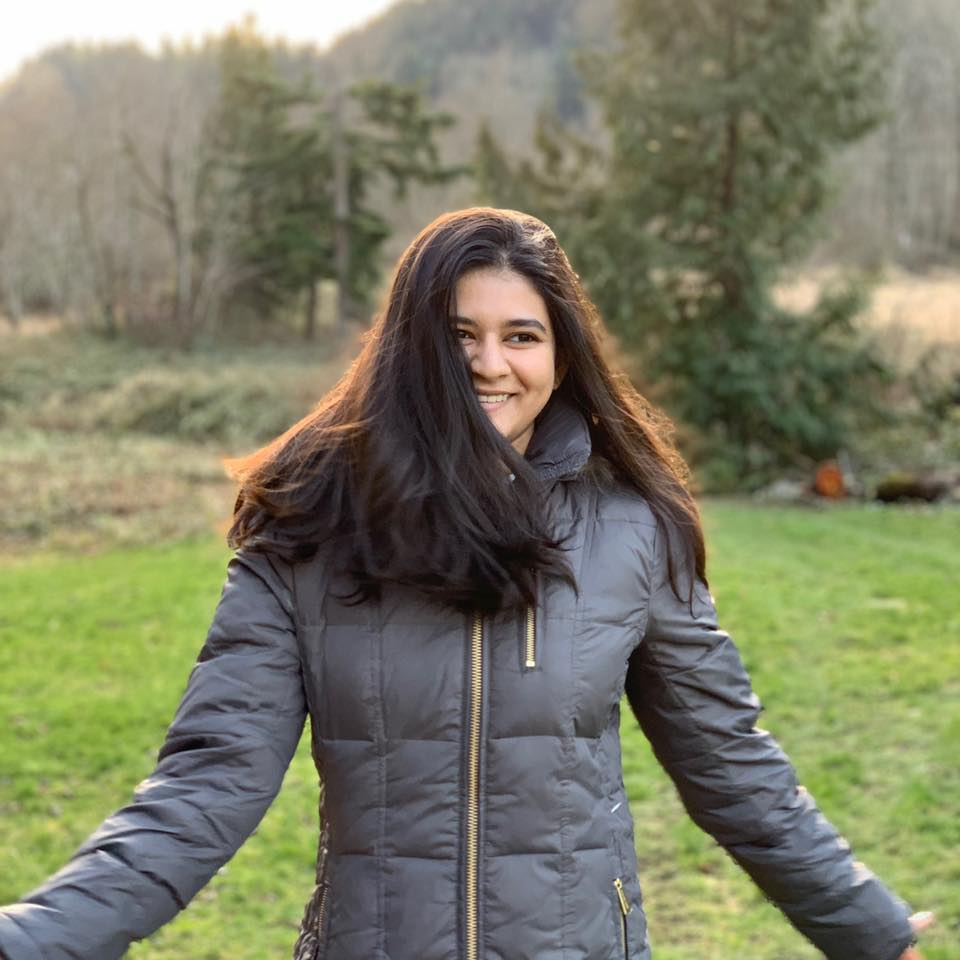

Monali
About Me
 I am Monali Chandurkar. I am a Full Stack Web Developer. I am a graduate student of Computer Science at University of Washington, Bothell. I have completed my bachelores in Informtion Technology from University of Pune, India. I like cooking. I am living in Seattle with my husband. I have learned HTML, CSS, Bootstrap, NodeJs, ExpressJs, ReactJs so far. I also have experience with Python, Java, C, CPP. I have been to San Francisco, Las Vegas, San Dieago, New York, Olympic National Park, Rainier National Park, Cascade National Park, Crater National Park. I would love to go to Zion National Park, Alaska, Hawai.